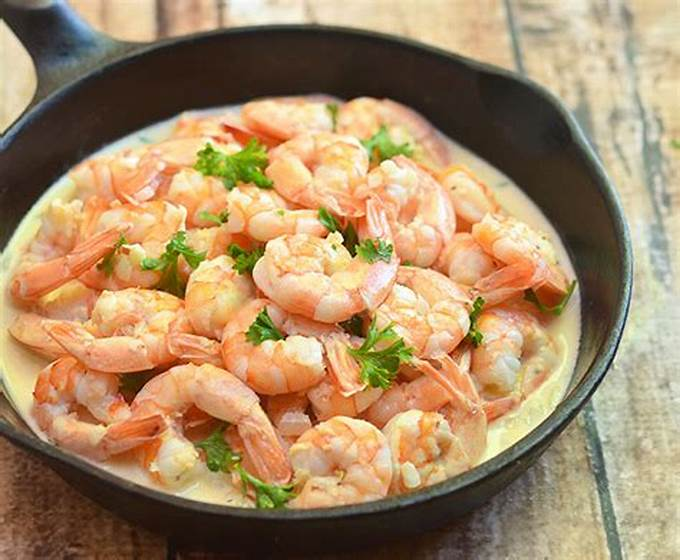

Salted Egg Shrimp
Back

Ingredients
- • 1 pound large shrimp
- • 2 tablespoons butter
- • 1 tablespoon oil/li>
- • 2 shallots, peeled and finely chopped
- • 2 cloves garlic, peeled and minced
- • 2 chili peppers, stemmed and minced
- • 1 cup evaporated milk
- • 6 salted egg yolks, mashed
- 2 bay leaves
- • salt to taste
Instructions
- 1. Trim tendrils of shrimp and rinse under cold water. In a colander, drain very well..
- 2. In a wide pan over medium heat, heat butter and oi
- 3. When butter begins to melt, Add shallots, garlic, and chili peppers. Cook, stirring regularly, for about 1 minute or until softened..
- 4. Reduce heat, add evaporated milk, and bring to a simmer.
- 5. Add salted egg yolks and continue to cook, mashing yolks with back of spoon, for about 1 minute or until slightly thickened
- 6. Add sugar and season with salt to taste.
- 7. Add shrimp and cook, stirring occasionally, until color changes to pink and the sauce thickens.
- 8. Remove from heat and serve hot.